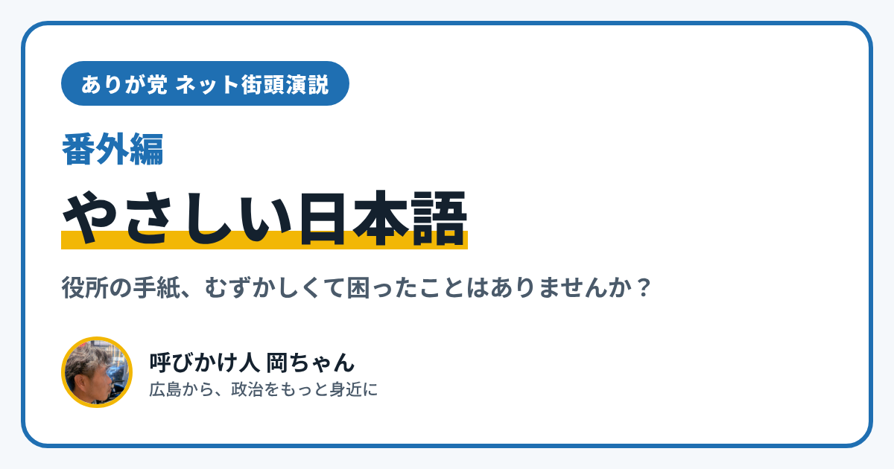

ありが党 ネット街頭演説 番外編｜「やさしい日本語」と、わかりやすい政治の言葉

こんにちは、ありが党の呼びかけ人、岡ちゃんです。今日のネット街頭演説（番外編）のテーマは「やさしい日本語」です。
役所からの手紙や、政治のニュースを読んで、「むずかしくて、よくわからない」と思ったこと、ありませんか？ 言葉がわからないと、大事なお知らせも、使える制度も、届かなくなってしまいます。
国も「やさしい日本語」をすすめています
「やさしい日本語」は、むずかしい言葉を言いかえるなど、相手のことを考えたわかりやすい日本語のことです。2020年8月に、出入国在留管理庁と文化庁が「在留支援のためのやさしい日本語ガイドライン」をまとめました。
このガイドラインでは、日本に住む外国の人だけでなく、お年寄りや障がいのある人など、たくさんの人に伝えるための工夫だと説明されています。書くときのコツは、たとえばこんなものです。
- 1つの文に、言いたいことは1つだけにして、文を短くする
- 3つ以上のことを伝えるときは、箇条書きにする
- むずかしい言葉や、略した言葉は、かんたんな言葉に言いかえる
- 「〜ないことはない」のような、二重の否定を使わない
政治の言葉こそ、やさしく
僕は、政治の言葉こそ、やさしい日本語で話すべきだと思っています。暮らしにいちばん関わることなのに、言葉がむずかしいせいで、「自分には関係ない」と感じてしまう人がいるからです。
ありが党は「政治を、もっと身近に」を大切にしています。このブログも、できるだけやさしい言葉で書くようにしています。それでも「この言葉がわからなかった」というところがあれば、ぜひ教えてください。
あなたの暮らしの声を聞かせてください。「この言葉、むずかしかった」という経験も大歓迎です。InstagramのDM（@ayu19841002）や、ありが党のページから送ってください。
ありが党は、まだ僕ひとりから始めたばかりです。政治をもっと身近にしたいと思う方、一緒に考えてくれる仲間を探しています。InstagramのDM（@ayu19841002）で気軽に声をかけてください。